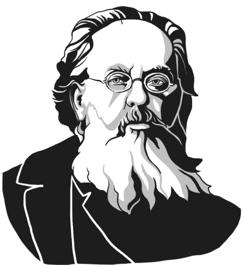

«Невозможное сегодня станет возможным завтра»
Константин Эдуардович Циалковский
О проекте
Проект создан в рамках проекта «Инженерный класс в московской школе» на основе МГТУ им. Баумана
Цель проекта — создание бесплатного симулятора орбит и орбитальных движений
Возможо, в дальнейшем проект будет развиваться и получит локализацию на английский язык
Проект начат в ноябре 2024 года
Github проекта
Создатели
Дизайн сайта, презентация проекта, фронтенд: Алексей Калашников
Бэкенд, создание симулятора и частично фронтенд: Илья Киселёв
Тестирование, создание базы данных: Елена Толкунова
Куратор проекта: Арина Гришина
Научный руководитель: Дмитрий Коняшкин


Теория симулятора орбит и орбитальных движений
Главная страница
О проекте
Ссылки на источники картинок для сайта
2024-2025 года
Проект для МГТУ им. Баумана
Симулятор орбит и орбитальных движений
Orbitalika